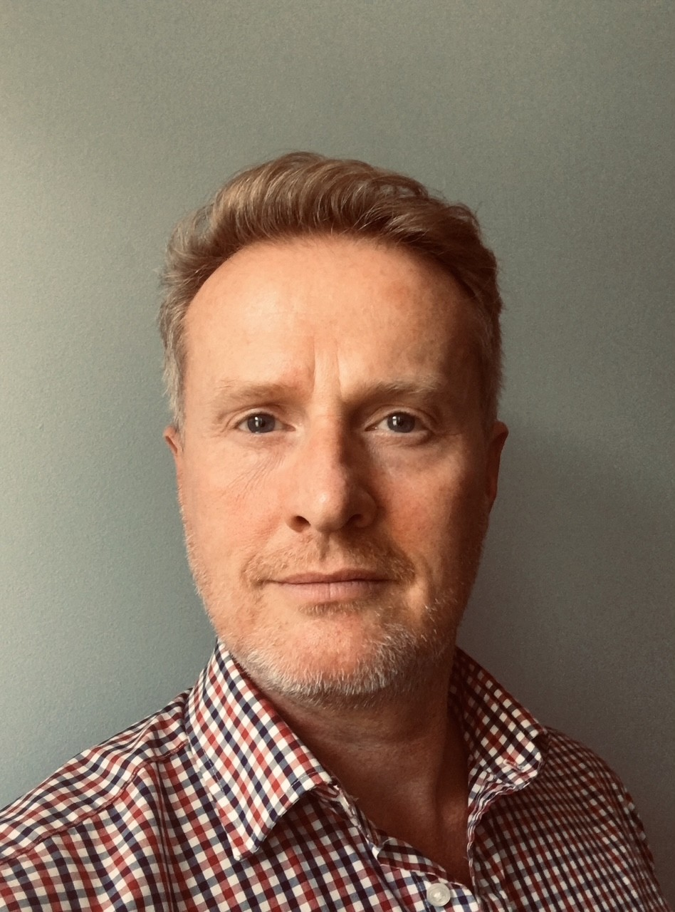

A two-day residential for Trust CEOs and senior leaders
The Every Child Achieving and Thriving white paper sets a new direction for trusts — with greater expectations around accountability, community collaboration, and standards.
For CEOs and senior leaders, this means navigating significant change whilst maintaining the strategic clarity and resilience needed to lead effectively. The pressures are real: Education Support's 2025 Teacher Wellbeing Index recorded its lowest score yet, with 86% of senior leaders reporting high levels of stress.
In partnership with the Harris Institute of Teaching and Leadership, this residential brings together a small group of Trust leaders to explore what it means to lead with integrity, openness, and purpose in a rapidly changing landscape — drawing on the Nolan Principles of public life, and emerging models of civic leadership.
A focused residential, not a conference.
A carefully facilitated space for honest conversation, strategic reflection, and building peer networks that sustain you in this work. Run on a strictly not-for-profit basis, places are deliberately limited to keep the group intimate and the conversation meaningful.
The residential is structured around the strategic questions that matter most to Trust leaders right now.
The residential is designed as a complete experience, not just two days in a room.
When you register, we’ll ask you about the leadership challenges you’re currently navigating and what would make this time most valuable. This allows us to shape the agenda around what matters most to those in the room, and to thoughtfully pair you with other CEOs facing similar contexts.
The residential blends expert input, case studies, facilitated discussion, and practical problem-solving. Day one focuses on sustainable strategic leadership — context and reflections. Day two turns to strategic foresight and implementation. Throughout, the emphasis is on peer-to-peer learning and building relationships with leaders who understand your context.
The residential is a starting point, not an endpoint. Our aim is to build a lasting peer network for Trust leaders — a space for ongoing strategic conversation, mutual support, and shared problem-solving. You’ll leave with the connections, tools, and momentum to sustain this work long after the two days.
Monday 6 – Tuesday 7 July 2026, with an overnight stay onsite.
Harris Institute of Teaching and Leadership, 170 Lennard Road, Beckenham BR3 1QP. A purpose-built training facility. Overnight accommodation and all meals are included.
£445 per participant. The residential is run on a not-for-profit basis: costs cover the venue, accommodation and all meals.
Trust CEOs and senior executive leaders. Places are limited to keep the group small, the conversation honest, and the experience genuinely valuable.
All facilitation is designed to maximise peer connections and shared problem solving.

James has worked in education for over 20 years. After stepping back from headship, he founded the HeadsUp4HTs network, which has grown into a community of thousands of school leaders. He works internationally as a coach, mentor, and thought leader on sustainable leadership and wellbeing.
Kate is a former primary headteacher with 15 years in education, now an ethical education consultant and ICF accredited coach. As UK Network Leader for HeadsUp4HTs, she has supported thousands of school leaders through values-driven coaching, facilitation, and peer support.
Gene has over 35 years of experience in education, spanning teaching, school leadership, and system-level roles. As Regional Principal at the Harris Institute, he brings deep expertise in leadership development and a commitment to supporting the next generation of Trust leaders.
Founded by James Pope and co-led with Kate Smith, HeadsUp4HTs champions the role of headship and provides sustainable emotional and professional support to school leaders across the UK. Through coaching, peer support, crisis response, and national campaigning, HeadsUp4HTs has become a trusted voice in the conversation about leadership wellbeing.
HeadsUp4CEOs extends this model to Trust executive leaders — applying the same principles of intentional, sustainable, and authentic support to the distinct challenges faced by those leading groups of schools.
The residential is structured around three interconnected principles that shape every session. Together, they move from understanding the landscape, through honest self-reflection, to purposeful action for your Trust and your people.
Understanding the system and your place in it. We start with the strategic context — what the white paper means for Trusts, what the evidence tells us about leadership sustainability, and why the status quo isn’t working. This is not about dwelling on the challenges, but about seeing them clearly so you can respond with purpose.
Honest reflection on yourself as a leader. The most powerful support comes from leaders who are willing to be open about the realities of the role. Through candid conversation, personal narrative work, and structured peer reflection, we create space to reconnect with your purpose and examine whether the story you tell about your leadership still serves you.
Taking deliberate action for your Trust and your people. Insight without action changes nothing. The programme moves from reflection to practical strategy — facilitated action learning, capacity planning tools, and structured time to develop a plan you can take back and implement.
The first day establishes the strategic context, builds trust within the group, and creates space for honest peer reflection on the realities of Trust leadership.
Grounding for the two days ahead: who is in the room, what brought you here, and how we will work together.
Setting the scene: the white paper context, what it means for Trust leaders, and what we have learned from supporting wellbeing across over 5,000 school leaders. Followed by an open group discussion — what strikes you, and what is resonating with your own experience?
A candid, facilitated conversation on Trust leadership — exploring personal leadership journeys, connection to purpose, and the realities of leading with openness and accountability. This models the honesty and vulnerability that underpins everything that follows.
Facilitated small-group sessions tackling real leadership challenges. You’ll bring a challenge you’re navigating, and work through it with peers who understand the context. Practical, honest, and solutions-focused.
A reflective session exploring your personal leadership narrative. What story do you tell about your leadership — and does it still serve you? Building on the fireside conversation from earlier in the day, this gives you space to do your own version of that work.
An evening to deepen the connections made during the day.
The second day shifts focus to forward planning, practical tools, and sustaining momentum beyond the residential.
In trios, you’ll explore the questions you submitted before the event — the things you’d most like to discuss with other CEOs. You’ll also share what hasn’t worked and what you’ve learned from it.
The centrepiece of day two. A substantial, hands-on workshop introducing practical tools and approaches for capacity planning, organisational resilience, and personal sustainability.
A structured plenary identifying what is already being done well, what needs to change, and what to protect.
Reflecting on your experience over the two days and the commitments you want to make — both to yourself and to sustaining this group as an ongoing space for peer support.
Dedicated time to capture your reflections, next steps, and commitments in a structured format you can take back to your Trust. Followed by small-group discussion to test and refine your thinking.
When you register, we’ll ask you about the leadership challenges you’re navigating and a question you’d love to explore with other CEOs. This shapes the agenda and ensures the sessions address what matters most to those in the room.
The residential is designed as the starting point for an ongoing peer network. Our aim is to build a community of Trust leaders who continue to meet, support each other, and hold each other accountable. You’ll leave with the connections and the framework to sustain this beyond the event.